2026-08-17
Leniwy huragan europejski.
Gwałtowne zjawiska powstają na styku obszarów ciepłych i zimnych. Mówimy, że jest tam duży gradient, czyli na małej odległości występują duże różnice. Na mapach meteo widać to po gęstości linii np. ciśnienia. Na czwartej mapce siły wiatru widać dokładnie linie ciśnienia, izobary, ich gęste ułożenie to sztorm. Na lądzie też będzie dynamicznie.
Mamy nietypowy układ cyrkulacji pod koniec lata. Z powodu zimnego oceanu i małego gradientu w okolicach zwrotnikowych nie pojawił się jeszcze żaden huragan na Atlantyku i nie wyrówanał energii termicznej miedzy południem, a północą. Po ludzku na południu nie ma chłodzić, bo jest chłodno. Woda u wybrzeży Afryki Zwrotnikowej ma 21 C, szału nie ma.
Tymczasem brak chmur nad Morzem Śródziemnym rozgrzał basen, ten basen i kraje Europy południowej. Wielki kontrast termiczny mamy między Europą południową i północną i to właśnie powstaje tajemniczy układ trzech niżów, który roboczo nazwałem Leniwym Huraganem Europejskim. Niż to wielki lejek kręcący sie w lewo, podczas jego wirowania olbrzymie masy wilgotnego powietrza wyrzucane są siłą odśrodkową na zewnątrz a wewnątrz gwałtownie spada ciśnienie.
Niewidzialna para wodna podczas słonecznych dni nasycała atmosferę nad Europą i w chwili spadku ciśnienia zdolność powietrza do magazynowania wilgoci radykalnie maleje. Przezroczysta para staje się cieczą tworząc najpierw małe cząsteczki aż w końcu ulewny deszcz. Chmury odcinają z góry dopływ słonecznego ciepła, opadające krople chłodzą powietrze wokół siebie, temperatura i ciśnienie lawinowo spada i mamy, to co mamy: jesienna pogodę.
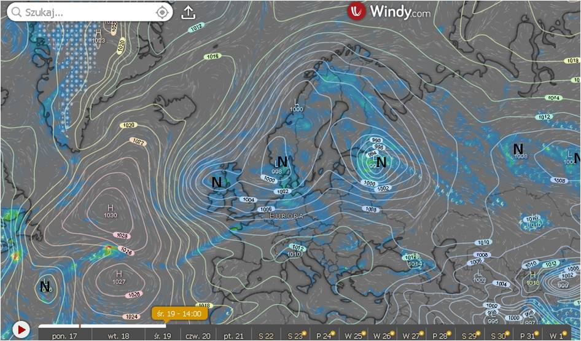
Trzy niże nad Europą tworzą wielki wir od Arktyki do Afryki
Niewykluczone, że przy ochładzaniu się Atlantyku ten schemat nad Europą stanie się stałym elementem gry jak wcześniej huragany. Oczywiście nie możemy liczyć na spektakularną, gwałtowną zmianę schematu, ale mechanizm wydaje się bardzo logiczny. Wszechświat nie znosi pustki, a do wymieszania się cyrkulacji między północą a południem dojść musi.
Prognozowane przeze mnie susze zostaną w ten sposób zażegnane, ponieważ do naszych cyrkulacji trafi dużo wilgoci z północnego Atlantyku i Morza Śródziemnego podczas letnich upałów. Czyżby cyklicznie jak przed kilkoma dekadami powrócił czas na obfite grzybobranie?
Mamy niby sezon huraganów na Atlantyku, ale na Ocenie spokojnie. Jakby jakiś kosmiczny strażak ugasił pożar planety tlący się w słabych umysłach podatnych na ruchome, kolorowe obrazki. Zapraszam po więcej: https://pawelklimczewski.pl/#huragany
Paweł Klimczewski
Jeśli uważacie, że możecie mnie wesprzeć nie ma kwot za małych. Nawet najmniejsze kwoty dają realne wsparcie.
mBank : 87 1140 2017 0000 4002 1094 2334
Paweł Klimczewski, tytułem: wpłata

Mój profil na FB
 Mój kanał na YT
Mój kanał na YT
 Moj profil na X. Mocno blokowany...
Moj profil na X. Mocno blokowany...
2026-08-16
Rosół z perliczki jako antidotum na globalne ochłodzenie.
Na dole mapki, tam, gdzie znaki zapytania, mamy pustkę po zalążkach huraganów. Niska temperatura oceanu nie generuje niżów, które mogłyby stać się nad Karaibami huraganami niosącymi olbrzymie ilości wilgoci do Europy, nic tam nie widać na horyzoncie. Jest za to płytki niż na wysokości Gibraltaru startujący od wybrzeża USA. Jego moc jest niska i może się nie przebić przez blokadę wyżu trzymającą się mocno od wielu miesięcy.
Będą się działy inne ciekawe rzeczy! Rozpalone powietrze znad Panonii (Węgier) generuje wielki wir konwekcyjny, z którego ma się wykluć już za dobę niż nad Podlasiem. Wtedy napierające z północy zimne fronty zostaną dosłownie zassane do Europy Wschodniej i błyskawicznie, nawet na Śląsku nocami zrobi się zimno. Każdy dzień bezlitośnie zbliża nas do wrześniowej równonocy i każda noc jest już dłuższa a dzień krótszy. Dobowy bilans nagrzewania i chłodzenia jest coraz gorszy i musimy się powoli żegnać z latem.
Obecny skok temperatury to wyzwanie dla naszego organizmu.
Koniec z chłodnikami, opijaniem się kefirem i zimnymi daniami. Czas na rosół z perliczki z pietruszką i koniecznie z dużymi żółtymi okami. Kluski lane lub inne specjały. Smacznego.
Paweł Klimczewski
Jeśli uważacie, że możecie mnie wesprzeć nie ma kwot za małych. Nawet najmniejsze kwoty dają realne wsparcie.
mBank : 87 1140 2017 0000 4002 1094 2334
Paweł Klimczewski, tytułem: wpłata
Mój profil na FB
Mój kanał na YT
Moj profil na X. Mocno blokowany...
2026-08-15
15 sierpnia trzeba podkreślić, że Piłsudski nie brał udziału w Bitwie Warszawskiej, był na imprezie w Puławach! Bitwę Warszawską wygrał gen. Tadeusz Rozwadowski
Tkwienie w kłamstwie to największy problem naszego narodu już od setek lat. Oddając cześć fałszywym bohaterom, Polacy stawiają pomniki swym katom. Bez faktycznej oceny sytuacji trudno w walce z wrogiem wymierzać prawidłowe ciosy. Od 30 lat Polacy okładają się nawzajem na froncie PO - PiS, gdy ukryta w cieniu polityków prawdziwa elita podsycając ten fałszywy spór drąży nasze kieszenie.
Miliony naszych rodaków widziało jak marszałek Piłsudski prowadził polską armię... Jest jeden problem, oni widzieli to w kinie, o którym dokładnie w tamtym czasie Lenin mówił, że jest najważniejszą ze sztuk.
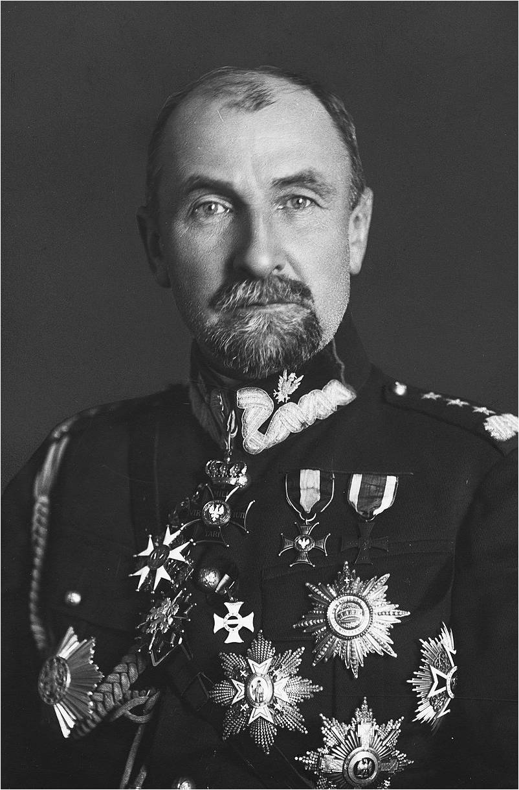
Generał Broni Tadeusz Samuel Szymon Jordan Rozwadowski
Rozwadowski po wybuchu zamachu majowego, stanął na czele legalnych sił rządowych przeciwko dokonującym puczu piłsudczykom.
Po dymisji prezydenta Stanisława Wojciechowskiego i zawieszeniu broni, Tadeusz Rozwadowski wraz z grupą oficerów dowodzących siłami rządowymi został aresztowany i uwięziony. Był przetrzymywany w celi o złych warunkach egzystencji. Władze sanacyjne miesiącami zwlekały z przedstawieniem mu aktu oskarżenia. W październiku 1926 roku w orzeczeniu Wojskowy Sąd Okręgowy stwierdził, że wobec braku dowodów nie ma powodu utrzymywania aresztu śledczego nad Tadeuszem Rozwadowskim, lecz w wyniku interwencji Józefa Piłsudskiego generał Rozwadowski nie wyszedł na wolność. W prasie piłsudczykowskiej została zorganizowana kampania atakująca Tadeusza Rozwadowskiego.
Z dniem 30 kwietnia 1927 roku generał Tadeusz Rozwadowski został przeniesiony w stan spoczynku. W obliczu nasilającej się w społeczeństwie akcji petycyjnej w obronie uwięzionych oficerów, 18 maja 1927 roku Tadeusz Rozwadowski został uwolniony. Ówczesne władze sanacyjne dokonały przy tym licznych uchybień prawnych. Władze uporczywie przesuwały termin rozprawy przeciw generałowi Rozwadowskiemu. Więzienie spowodowało, że Tadeusz Rozwadowski istotnie podupadł na zdrowiu. Zmarł w Warszawie 18 października 1928.
Często za powód śmiertelnej choroby Rozwadowskiego podaje się zatrucie toksynami w celi. To stara praktyka zbrodniarzy, malowanie celi opozycjonistów zatrutą farbą.
Paweł Klimczewski
Jeśli uważacie, że możecie mnie wesprzeć nie ma kwot za małych. Nawet najmniejsze kwoty dają realne wsparcie.
mBank : 87 1140 2017 0000 4002 1094 2334
Paweł Klimczewski, tytułem: wpłata
Mój profil na FB
Mój kanał na YT
Moj profil na X. Mocno blokowany...
2026-08-15
Dlaczego w Turcji mam zniżkę za bycie katolikiem.
Do sanktuarium Meryem Ana Evi (Dom Najświętszej Marii Panny) nad Morzem Egejskim dotarłem 15 sierpnia 2020 z Bułgarii pieszo. Najpierw przez granicę bułgarsko-turecką, potem stopem. Jak pamiętacie był to czas "plandemi" zakazu podróżowania, QR-kodów, itp.
TO JEST JEDNO WIELKIE KŁAMSTWO! Nie było żadnych formalnych ograniczeń! Moje świadectwo poniżej jest tego dowodem, a sprzeczają się ze mną w tej sprawie osoby, które cały ten czas spędziły przed telewizorem/w internecie.
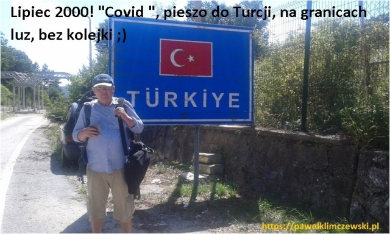
Granica Bułgarskoturecka, lipiec 2020, wszystko otwarte, ludzi brak.
Nigdy nie spędziłem tyle czasu w Turcji co w latach 2020-2022! Nie było ani wtedy, ani potem, żadnych utrudnień w podróżowaniu, granice były otwarte. Mierzono jedynie temperaturę czoła, miałem wtedy 40 C, bo w upale, wysoko na przełęczy, gdzie jest granica zgrzałem się trochę. Żartowaliśmy z żołnierzem, że zaraz wszyscy umrzemy. On palił z kolegą jednego papierosa na spółkę, wszyscy mieli maseczki na brodzie, ja wcale. Taki to był wirus.
Potem wracałem przez Belin, wszędzie na granicach pytany o QR- kody mówiłem, że nie używam telefonu i było po sprawie. Jakiekolwiek ograniczenia były WYŁĄCZNIE W TV, administracyjnie nie było żadnych. Na polskiej granicy pytany o miejsce odbywania kwarantanny odpowiadałem : " Nie wiem gdzie będę dziś spał, jeszcze jest wcześnie..." i też było po sprawie. Gdy raz celnik się upierał o adres odpowiadałem: "W Schronisku na Śnieżce, zapraszam!" On zapisywał: "W Schronisku na Śnieżce." To było zimą, wtedy w Sudetach wiało 200 km/h...
Stałym punktem moich wypraw do Turcji jest nawiedzenie Meryem Ana Evi w Efezie, czyli w Domu Najświętszej Marii Panny. Wg tradycji był to ostatni ziemski dom matki Jezusa, dokąd zabrał ją św. Jan Ewangelista, autor Apokalipsy, gdy chrześcijanie uciekali z Jerozolimy w czasie terroru jaki siał tam Szaweł, późniejszy św. Paweł. Dziś 15 sierpnia obchodzimy wspomnienie Wniebowzięcia Najświętszej Maryi Panny właśnie z tego miejsca, od końca XIV wieku lezącego w granicach Imperium Osmańskiego, czyli Turcji.
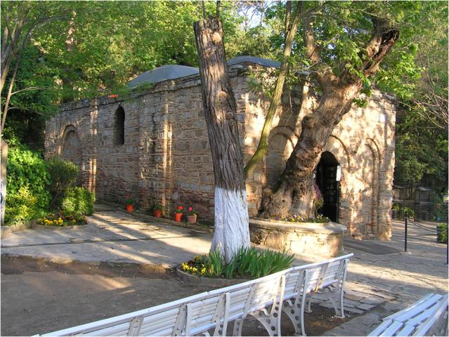
Maryem Ana Evi. Dom Najświętzej Maryii Panny w Efezie.
Pod koniec lata przypada w islamie ruchome święto Kurban Bayram, czyli święto ofiary. Chodzi o ocalenie Izaaka, którego Abraham był gotów zabić na ofiarę Bogu. Przypomnijmy, że był to jedyny syn 100 letniego Abrahama a sam Abraham miał zostać ojcem wielkiego narodu. Jaka wiara! W chwili, gdy podnosił nóż aby zabić syna anioł powstrzymał go i dał mu ofiarnego baranka. Historia z początków ludzkości jest zarazem momentem wielkiego skoku etycznego. Od tej pory ludzkie życie nie może być ofiarowane Bogu, jest zbyt święte, kończymy z barbarzyństwem. Abraham, semita, potomek Sema, staje się protoplastą narodu arabskiego a jego lud w VI w. poprzez osobę proroka Mahometa, inicjuje islam.
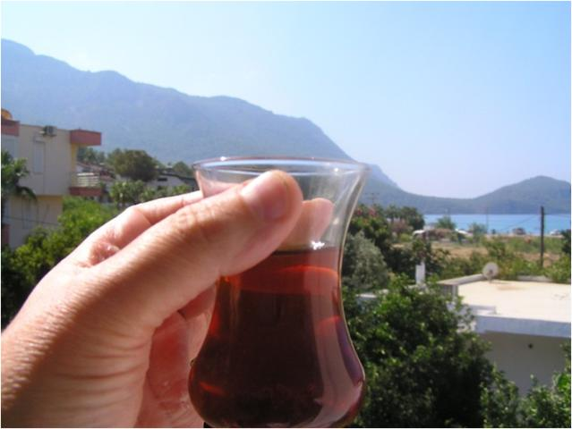
Turecka herbta
Kilka tysięcy lat później jadę na lotnisko w Tureckiej Antalyi. Mam nadzieję zrobić jeszcze jakieś zakupy, ale milionowe miasto jest puste! Wszystko pozamykane a my zwyczajnie głodni. Ostatni przechodnie z siatkami pieczywa spiesznie znikają w zaułkach. Pieczywa... piekarnia ! Pracuje tylko piekarnia, jesteśmy uratowani! Piekarnia w Turcji to nie tylko chleb, to cała gama pyszności, simity, borki itp. Piekarz, gdy się dowiaduje, że wracamy z Domu Maryi, wyciąga swój stół z biura, stawia pod drzewem na ulicy i zaczynamy biesiadować, liczne desery i przysmaki dostajemy na drogę gratis... Samolot za kilka godzin, cóż więcej trzeba. Słyszymy pochwały, że tyle tysięcy kilometrów zrobiliśmy a on jeszcze nie był z pielgrzymką do Mekki. Potem przez 10 lat odwiedzania Turcji jest zawsze podobnie. Wielu napotkanych Turków chwali się, że też byli w Domu Najświętszej Marii Panny, siadamy wtedy na herbatkę, są pod wrażeniem, że znamy historię Izaaka i kwitujemy: aynı Kitap (jedna Księga).
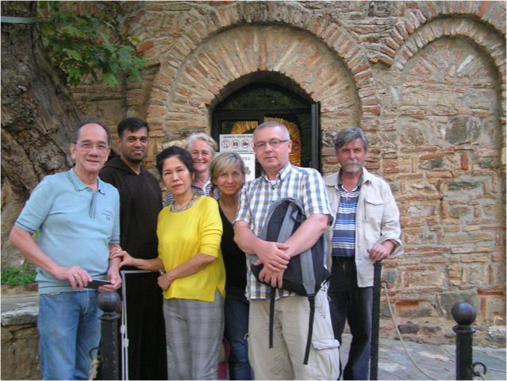
W Efezie, na Wzgórzu Słowików, spotkacie ludzi dobrej woli z całego świata
Muzułmanin nie może zaakceptować faktu, że Jezus był synem Boga, dla nich był przedostatnim, ale bardzo ważnym, prorokiem. Matka Jezusa zajmuje jedno z najwyższych miejsc w Islamie, ale bez przesady... Bóg islamu jest zbyt doskonały, aby się wcielić w osobę człowieka, to jest poza dyskusją. Jednak fakt, że w tej postaci jest dla nas Zbawicielem jest powodem do szacunku dla jego wyznawców... Dziwne prawda ? Ale możliwe. Dlatego chętnie wracam do Turcji!
Gdy jesteśmy w Domu Marii klęczą obok nas milionerzy z Kuwejtu i ubodzy Kurdowie mieszkający tuż obok sanktuarium. Gdy się mijamy, pozdrawiamy się "salam alejkum", to są dokładnie słowa zmartwychwstałego Jezusa, gdy spotyka swych przerażonych uczniów "pokój wam". Innymi słowy: "Nie lękajcie się!". Dziś mamy święto Wniebowzięcia Najświętszej Maryi Panny, w Efezie obok katolików będzie, jak w każdy weekend, mnóstwo muzułmanów. Przychodzą tam z całym swym życiem, ze łzami w oczach, w najgorszych chwilach, tak jak przychodzi się do Matki.
Paweł Klimczewski
Jeśli uważacie, że możecie mnie wesprzeć nie ma kwot za małych. Nawet najmniejsze kwoty dają realne wsparcie.
mBank : 87 1140 2017 0000 4002 1094 2334
Paweł Klimczewski, tytułem: wpłata
Mój profil na FB
Mój kanał na YT
Moj profil na X. Mocno blokowany...
2026-08-11
Gdzie te huragany, co ugaszą planetę?
Mamy juz teoretycznie od kilku tygodni sezon huraganów na Atlantyku, ale na Ocenie spokojnie. Na styku arktycznego powietrza i tropikalnego Golfsztromu burza tropikalna Cristobal rozpędziła wiatr raptem do 65 km/h i ucichła. Takie prędkości osiągają dziewczyny z przedmieścia na wrotkach, zatem to nie kataklizm, jakby jakiś kosmiczny strażak ugasił pożar planety tlący się w słabych umysłach podatnych na ruchome, kolorowe obrazki.
Od dekad słyszymy, że "już za chwileczkę, już za momencik" za lat kilka zatoną wyspy na Pacyfiku, Arktyka się roztopi, itp. aby przenieść się do przyszłości wystarczy poczekać, zatem odczekaliśmy te lata i sprawdzamy.
Wracamy do przeszłości, czyli mówimy tym straszycielom: "patrzcie jest zupełnie odwrotnie, lody Arktyki rosną, wyspy są jak były", ale oni nie chcą tego słyszeć, to są ludzie całkiem nieracjonalni, w tym cała akademia z drobnymi wyjątkami. Doczekaliśmy chwili, gdy tytuł naukowy w tych dziedzinach to obciach.
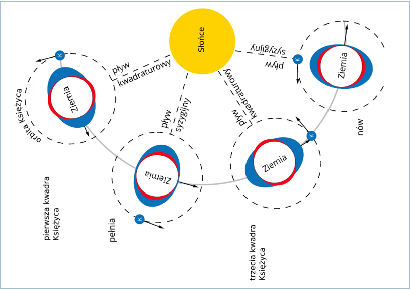
Pływy oceaniczne powodowane sumaryczną grawitacją Księżyca i Słońca
Jesteśmy tuż po nowiu, gdy grawitacja Księżyca tworzy największe pływy oceaniczne i najbardziej deformuje powierzchnie oceanów. Ciepła woda ze środka Atlantyku wleje się na szelfy kontynentów i coś się stanie, ale nie wiadomo, co. Ilość zmiennych jest olbrzymia, a ich większość nie jest brana pod uwagę w "modelach klimatycznych", które są po prostu maszynkami do wyciągania kasy z "grantów".
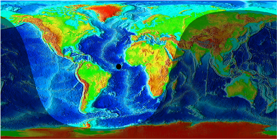
Księżyc nad Atlntykiem 2 dni po nowiu
Z mapy z kontynentami i morskimi głębinami łatwo ocenić, że Księży przechodzący jak miesiąc temu nad Morzem Północnym, gdzie są płycizny, zupełnie inaczej zadziała niż, gdy przechodzi między Afryką i Karaibami, gdzie mamy głębiny.
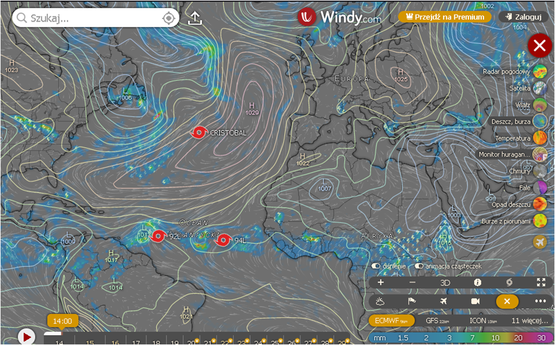
Resztki po burzy tropikalnej i 2 zalążki huraganów
Za dobę dowiemy się, czy te potężne ruchy oceanu wzmocnią, czy osłabią dwa zarodki huraganów na południu. Ich brak w Europie oznacza suszę, ostatnia nadzieja to głębokie niże rodzące się przy brzegach USA, gdzie woda ma blisko 30 C.
Mądra babcia mówiła: "Synku, pamiętaj, nie jedź nigdy tam, gdzie jadą wszyscy."
Paweł Klimczewski
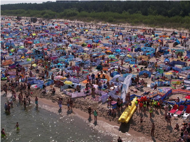
Tam nie jedź!
Jeśli uważacie, że możecie mnie wesprzeć nie ma kwot za małych. Nawet najmniejsze kwoty dają realne wsparcie.
mBank : 87 1140 2017 0000 4002 1094 2334
Paweł Klimczewski, tytułem: wpłata
Mój profil na FB
Mój kanał na YT
Moj profil na X. Mocno blokowany...
2026-08-11
Okręt flagowy światowej ciemnoty tonie, a my mu dołożymy jeszcze spory balast.
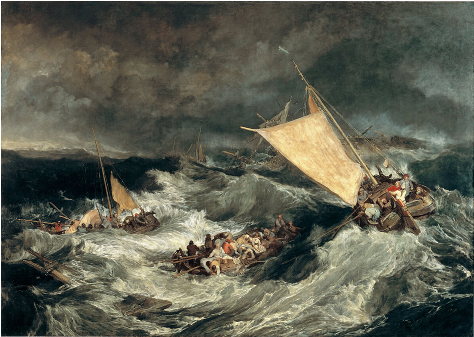
"Wrak statku”, Joseph Mallord William Turmer, olej na płótnie, ok. 1805
Prognoza pogody to latem loteria. Czytelnicy tego bloga wiedzą, że Księżyc potrafi zdemolować każdy model pogody podnosząc ocean o kilka metrów i zalewając ciepłymi wodami szelf kontynentalny. Jednocześnie wyciąga on z głębin oceanu chłodne wody i radykalnie zmienia układ ciśnień i cyrkulacji. Ochłodzenie się powierzchni oceanu implikuje brak chmur i budowanie się wyżu. Ocean zbyt gorący tworzy wir niżu i się sam schładza mieszając ocean gigantycznymi falami.
Przez kilka lat studiowałem geofizykę Ziemi i klimatologię i z pełną odpowiedzialnością twierdzę, że dane zbierane przez wszelkie satelitarne czujniki są mało warte. W tych danych jest dużo błędów natury technicznej i pomiarowej jak np. wiecznie zachmurzone obszary okołobiegunowe praktycznie nie są dostępne do ciągłego pomiaru, a publikowane zdjęcia "zlodzenia" to estymaty oparte o poprzednie estymaty, itd.
Ale co najważniejsze globalny system pomiaru klimatu opiera się na temperaturze wód na jej samej powierzchni. To jakby wielki domek z kart powiesić na pajęczej nici, jeden podmuch wiatru i wszystko staje się stertą gruzu. Potężne prądy morskie i sztormy zmieniają ten obraz niezrozumiały dla człowieka, co widać po beznadziejnie błędnych prognozach.
Wyż, który miał dziś być na prawo od Polski i jutro przynieść "afrykańskie upały" stoi sobie na lewo drwiąc z zaklęć szamanów i ściąga zimne powietrze z północy. Co prawda model zapowiada, że to nastąpi za kolejne dwa dni, ale to loteria. Nie wiemy jak pływy oceaniczne wymieszają głębiny oceanów i co się stanie, gdy w nowiu, czyli na linii prostej, między Ziemią a Słońcem 14 sierpnia nad Atlantykiem przejdzie Księżyc. Od kilku miesięcy z powodu zimnego Atlantyku u brzegów Afryki nie narodził się żaden huragan. Za dwa, trzy dni dowiemy się, czy płytki niż u brzegów Afryki stanie się choć zalążkiem burzy tropikalnej i z Karaibów wyrwie choć trochę wilgoci, by ją przenieść do nas, jak to było od zawsze.
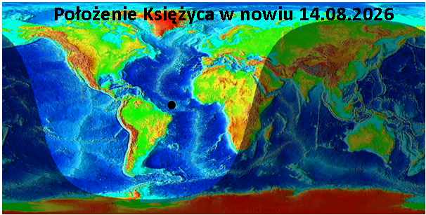
Księżyc w chwili nowiu.
Było, ale się zmieniło, media epatują gorącym Morzem Śródziemnym, ale ono jest tylko lokalnym basenem poza systemem globalnych oceanów, a jest gorące właśnie z powodu zimnego Atlantyku. Ten nie dając chmur w tym rejonie wystawia wody Hiszpanii, Włoch, Grecji, Turcji na bezlitosne Słońce i lokalna "sadzawka" jest cieplutka jak płytki basen ogrodowy bez przepływu.
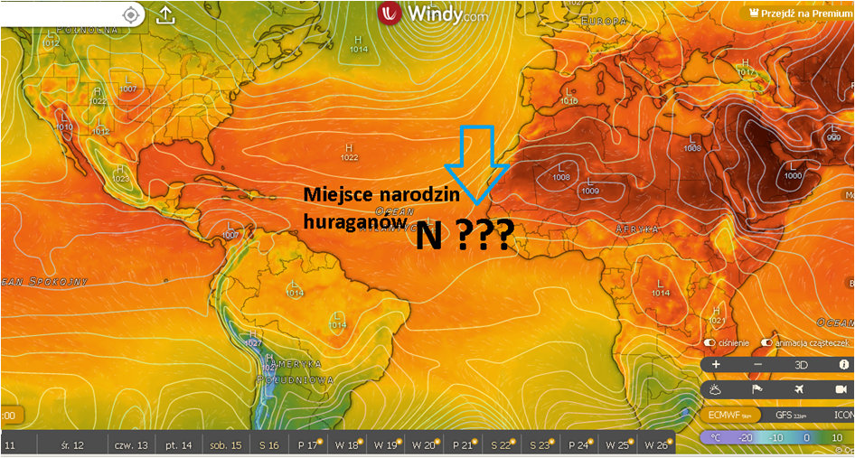
Zarodek niżu mogący dać początek burzy tropiklanej lub huragnowi.
Jak miesiąc temu czekamy na Księżyc, bo nie da się przewidzieć ruchów złożonego układu bez znajomości i rozumienia tego, co w nim się dzieje. Człowiek jest wielki i jego umysł rozwiązuje największe zagadki, ale ostatnie kilka dekad zaorały świat naukowy i geniusze zadający pytania są gnębieni i odsuwani od możliwości robienia badań. Zachodnia cywilizacja skręciła do ślepego zaułka nazywanego pogardliwie "szamaństwem",choć powinno się mówić szamanizmem.
Nie popadajmy jednak w czarną rozpacz, nasz świat nie jest dziś definiowany jako terytorium, ale jako sieć ludzkich powiązań.
Tworzymy społeczność odrzucającą doktrynalizm tam, gdzie istotą rozwoju człowieka jest wątpliwość i poszukiwanie, jesteśmy racjonalni i kropka. W USA kurs oficjalny wrócił do rozumu jako takiego, choć siły ciemnoty ciągle tam ściemniają. Czas na Europę! I tu mam dla Was powód do radości.
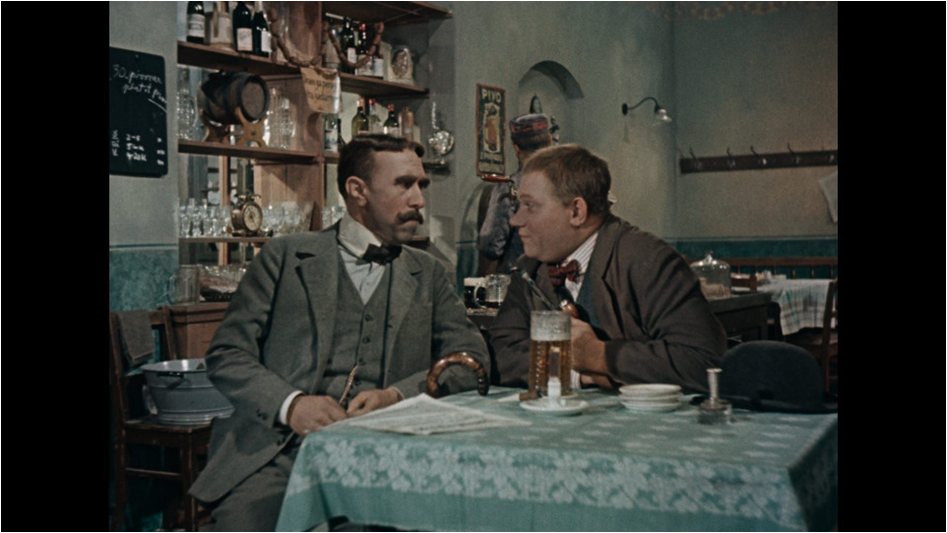
Dobry wojak Szwejk w kuluarach pewnej ważnej konferencji wojennej. 1914
Zostałem zaproszony do prowadzenia panelu energetyczno-klimatycznego na największej polskiej imprezie biznesowo -naukowo-politycznej. Będzie się działo!
Jest to w dużej mierze Wasz sukces, Wasze wspieranie mnie i rozsyłanie moich raportów i felietonów jest tu kluczowe, za co bardzo Wam dziękuję! Jesteśmy jak łódź podwodna lub góra lodowa: mało kto nas widzi, ale poczują nas wszyscy.
Paweł Klimczewski
Jeśli uważacie, że możecie mnie wesprzeć nie ma kwot za małych. Nawet najmniejsze kwoty dają realne wsparcie.
mBank : 87 1140 2017 0000 4002 1094 2334
Paweł Klimczewski, tytułem: wpłata
Mój profil na FB
Mój kanał na YT
Moj profil na X. Mocno blokowany...
2026-08-10
Klima + lekarz = droga recepta.
To rzadki widok w mediach, mapa przedstawiająca wysokość izotermy zero.
Gdy lecimy samolotem na 10 km wiemy lub nie, że za oknem jest minus 50 C i niewiele sobie z tego robimy, bo w samolocie panuje przyjemny chłodek z klimatyzacji.
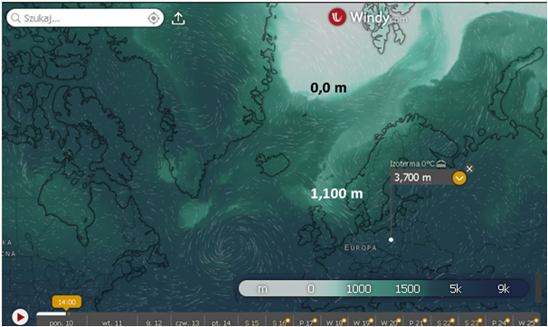
Izoterma zero
O tym jak jest na zewnątrz przekonało się kilku śmiałków, którzy próbowali podróżować poza kabiną samolotu, najczęściej w komorze podwozia. Skrajnie drastyczny przypadek to sytuacja, gdy podczas lądowania nad Londynem, mechanizm podwozia wypchnął zamrożone ciało "migranta" i ten jako bryła lodu wpadł do ogródka i zdemolował kwiatki-rabatki. Jednym słowem sam wykopał sobie grób między pelargoniami.
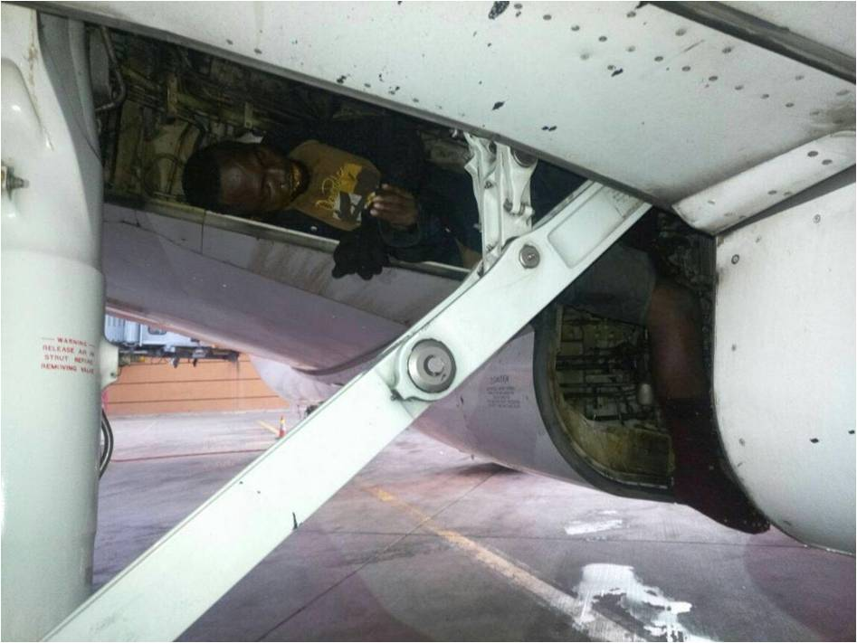
Migrant na gapę
Atmosfera Ziemi może mieć ok. plus 50 st. C tuż nad rozgrzanymi skałami Półwyspu Arabskiego i minus 50 C kilka km ponad naszymi głowami. Punkt, a dokładnie wysokość, gdzie jest zero, czyli granica między plusem a minusem to izoterma zero. Dziś mamy tę warstwę ok. 3800 m nad Polską, gdy w listopadzie lub wcześniej przeżyjemy pierwsze przymrozki, warstwa ta dokładnie dotknie naszych pól i lasów.
Pogoda to zmiany w atmosferze w pionie, ale my lubimy oglądać je na mapkach w poziomie, bo to brzmi lepiej że, "z północy nadciągną masy arktycznego powietrza". Niby to prawda, ale te masy nadciągną z góry, po prostu obniży się izoterma zero, bo energia słoneczna nagrzewająca grunt i wody wokół nas będzie za mała, by ogrzać do temperatur dodatnich powietrze nad tym ogrzewanym obszarem.
Na mapce widzimy, że dziś nad Polską zero mamy 3700 m nad głowami, ale już u wybrzeży Szkocji jest to tylko 1100 m a dalej nad północ mapa robi się jasna i tam gdzie jest biało panuje mróz nad samym oceanem.
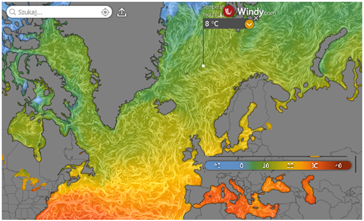
Temperatura powierzchni morza
Ocean tam nie zamarza bo jest słony i fale nieustannie poruszają wodą, płynie tam też ciepły Prąd Zatokowy, widoczny na mapie temperatury wody, gdzie widzimy 8 C. Tam właśnie dochodzi do silnego studzenia i parowania oceanu. Wilgoć się unosi, leci nad Grenlandię, tam na kilku km wysokości panuje zawsze duży mróz.
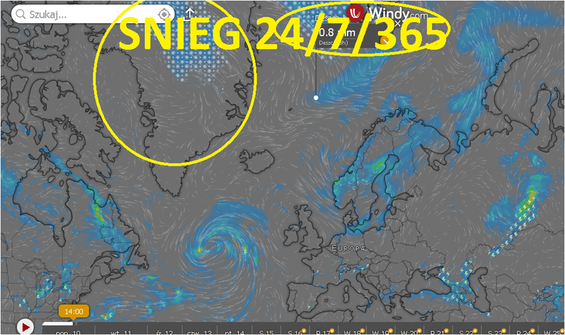
Opady w Arktyce, lato.
Śnieg pada tam cały rok: zima, lato, w dzień i nocy i nigdy nie topnieje, dlatego Grenlandia od 11 000 lat absorbuje coraz więcej lodu kosztem oceanów, których poziom w tej sytuacji musi opadać, bo analogicznie jest na wielkim kontynencie po drugiej stronie globusa, na Antarktydzie.
Ten jasny pas między Szkocją i Skandynawią to welon jesieni, jutro u nas wietrznie i 10 C mniej niż dziś, zatem zmieniamy garderobę i koniecznie wyłączamy klimę, którą trzeba rozebrać i umyć, aby nie wyhodować sobie grzybni, która nas mocno alergizuje i po kolejnym włączeniu klimy za kilka dni wstrzelimy sobie miliony zarodników grzybni do samochodu, czy sypialni. Najprościej klimy nigdy nie kupować/używać i dodatkowo oszczędzić na lekarzach i farmaceutach.
Paweł Klimczewski
Jeśli uważacie, że możecie mnie wesprzeć nie ma kwot za małych. Nawet najmniejsze kwoty dają realne wsparcie.
mBank : 87 1140 2017 0000 4002 1094 2334
Paweł Klimczewski, tytułem: wpłata
2026-08-10
Zaćmienie Słońca to wielki cień na globusie o czym gęsi nie wiedzą.
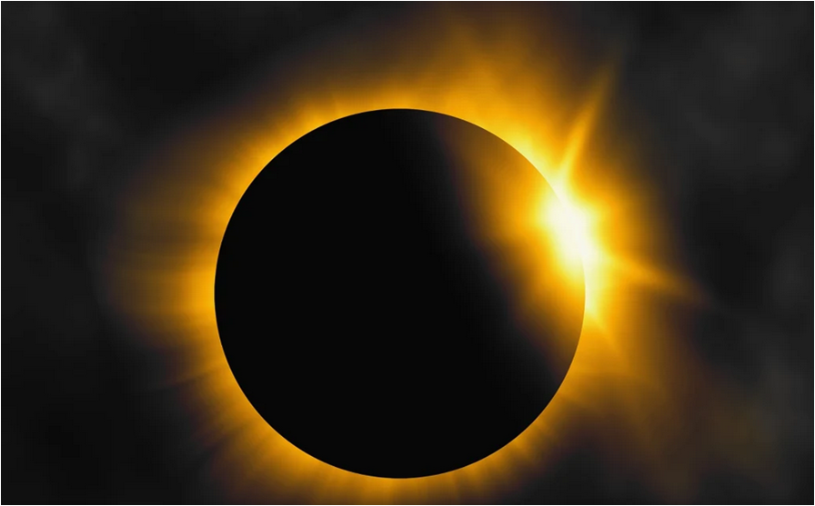
Zaćmienie Słońca
Dziś w południe (10 sierpnia 2026) dotrze do Pomorza zimny front z deszczem. To już nie będzie ciepły, letni deszcz. Za kilka dni, 12 sierpnia 2026, mamy nów Księżyca i zaćmienie Słońca. Na Ziemię po jej oświetlonej stronie padnie cień Księżyca. Czyli wielkie zmiany!
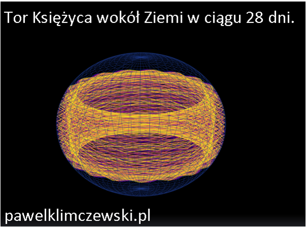
Tor Księżyca wokół Ziemi
Co prawda Księżyc raz na miesiąc jest w nowiu, gdy jest między Ziemią a Słońcem jednak zjawisko zaćmienia są bardzo rzadkie. Dlaczego? Dlatego, że orbita naszego satelity wokół pochylonego inaczej każdej doby globusa jest skomplikowana. Rysowanie tego, co się dzieje na kulach na kwadratowych mapach stwarza dalsze komplikacje, ale popatrzmy.
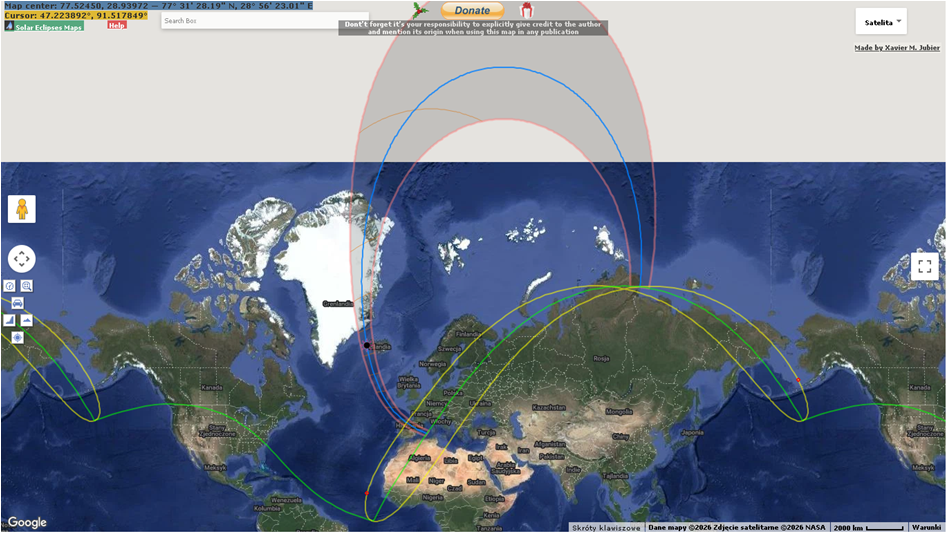
Mapa zaćmienia Słońca 12.08.2026
Na mapce niebieska linia pokazuje środek wędrującego ocienia, a linie fioletowe granice pełnego zaćmienia, tam Słońce zniknie całkiem. Zacznie się to na północnej Syberii, w trakcie polarnego dnia przejdzie przez Arktykę, zachodnią Islandię, Hiszpanię i o zachodzie Słońca zakończy się na Morzu Śródziemnym, na linii zielonej. Ta linia rozdziela obszary, gdzie zaćmienie częściowe będzie trwało do zachodu Słońca lub wcześniej. Linia ta przechodzi przez Polskę na skos. Kto chce zobaczyć całe, okrągłe Słońce przed jego zajściem musi być po lewej stronie tej linii, np. w Szczecinie. Rzeszów i Białystok pożegnają zachodzące Słońce częściowo przyćmione. Ale czy zobaczą? Kluczowe tego dnia to być tam, gdzie nie ma chmur. Inaczej zobaczymy tylko, że jest ciemniej, ale tarczy naszej gwiazdy przyciętej łukiem skalistego satelity nie zobaczymy.
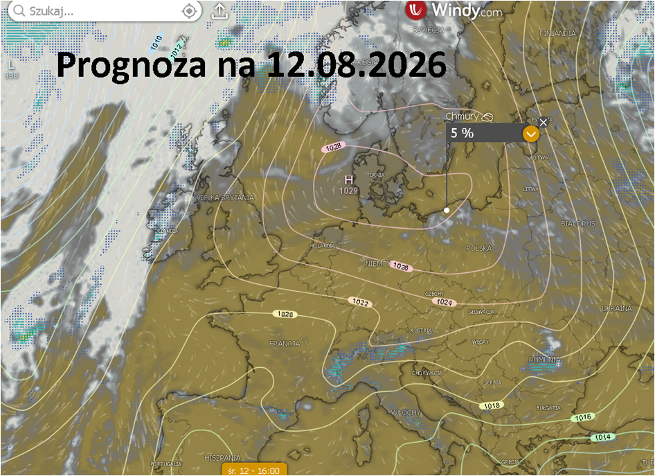
Prognoza chmur 12.0.2026
Prognoza jest dobra, mamy centrum wyżu, czyli zachmurzenie małe, ale w godzinach wieczornych to loteria. Gdy ćwierć wieku temu pojechałem na Węgry, by to zobaczyć, akurat tego dnia jak nigdy latem chmury spowiły cały Budapeszt. Milion ludzi miało w południe tylko 5 minut nocy z deszczem. Moj instynkt meteorologiczny kazał mi o świcie jechać na południe i tam na granicy z Serbią chwile przed seansem niebo zrobiło się niebieskie, aby za chwilę w samo południe zrobić się czarne i pokazać gwiazdy. Sfilmowałem nawet w południe Wenus i Merkurego.
Świadkami całego seansu było tuż obok mnie wielkie stado gęsi na fermie. W chwili, gdy zapadł zmrok, kilkaset gęsi umilkło i położyło się spać, aby za kilka minut, gdy blask światła powróci, poderwać się i zrobić wilki klangor. Ludzie ponoć nie gęsi. Niestety ostatnio, od chwili wprowadzenia telefonów z telewizją bywa różnie, ludzie już nie patrzą w niebo. Aby sprawdzić, czy jest noc czy dzień, zaglądają do telefonu.
Jeśli uważacie, że możecie mnie wesprzeć nie ma kwot za małych. Nawet najmniejsze kwoty dają realne wsparcie.
mBank : 87 1140 2017 0000 4002 1094 2334
Paweł Klimczewski, tytułem: wpłata
2026-08-01
Gorączka krwotoczna nie jest taka zła, gorsza jest gorączka umysłowa.
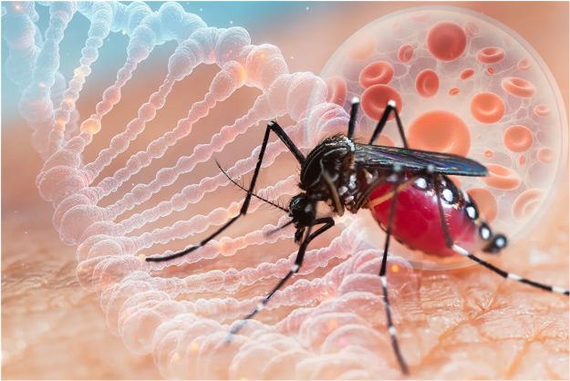
Komar jaki jest każdy widzi: odżywia się ludzkim DNA...
Media uwielbiają epidemie i stosy trupów, jeśli tylko ktoś w Europie zostanie na lotnisku zdemaskowany jako "nosiciel" media mają ucztę. Publika jest już nauczona mocnych słów i każdy, nawet dziecko wie, że na hasło "gorączka krwotoczna" trzeba się bać. Przewiduję, że temat afrykański będzie mocno w tym sezonie "grzany". Masowe ataki na hiszpańską granicę w Afryce zostały sprowokowane na zawołanie przez hiszpańską władzę, w tym wypadku sądowniczą. Orzeczenie sądu hiszpańskiego o zakazie deportowania nielegalnych imigrantów (Willkommen! Wir schaffen das! - Witajcie! Damy radę!) to powtórka z Angeli Merkel.
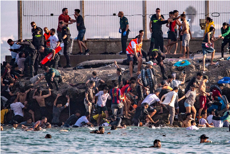
Willkommen!
Hiszpanie mają umysły mocno rozpuszczone lewicową nostalgią za absurdem. Ma to podłoże mocno lewicowe, komunistyczne, oparte o etos "wojny domowej z faszystą " gen. Franco. Nie była to żadna wojna domowa tylko powtórka z rewolucji sowieckiej, czyli desant "międzynarodowego kapitału" i banalna kradzież resztek po imperium. Co ciekawe początek tej klęski to przegrana wojna z USA w 1898 r. o Karaiby. USA po zwycięstwie rewolucji Radzieckiej w Rosji zostały największym "inwestorem" w ZSRR i zbudowały cały sowiecki przemysł przy pomocy technologii Forda. Potem przez ponad pół wieku USA za bezcen kupowały wytwory przemysłu bloku sowieckiego, gdzie robotnicy zarabiali 10-15 USD miesięcznie, czyi tyle ile kosztowały dwie winylowe płyty Michaela Jacksona.
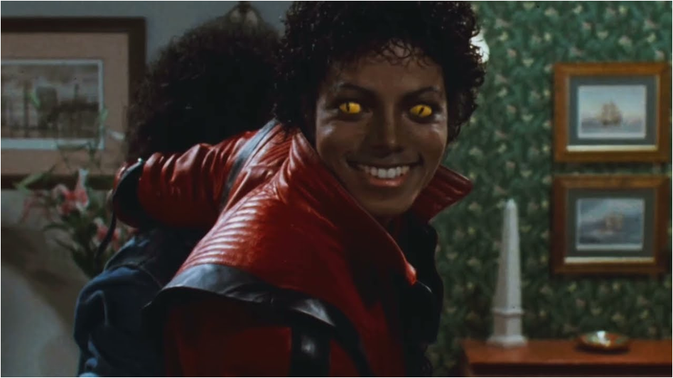
Michael Jackson.
Sowiecka idea to cały świat pod czerwonym sztandarem, zatem zdobycie przyczółków nad Atlantykiem było dla Stalina bardzo ważne. Wspierał czynnie ten bandycki napad na pogrążone w chaosie, upadające katolickie imperium.
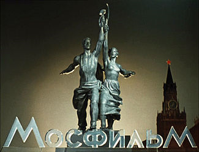
Fioł wiecznie żywy
Ale co z gorączką krwotoczną? Nie jest to nic fajnego, ale nie jest to jedyna choroba. Chodzi o grupę chorób, wywoływanych rożnymi patogenami. Kilka z nich ma przebieg dramatyczny i śmiertelność na poziomie 10-40 %, ale tych zgonów w skali globu jest nieistotnie mało wśród wszystkich zgonów, źródła podają 60 tysięcy . Łącznie zgonów na świecie w roku jest ponad 60 mln, z czego w wypadkach samochodowych ginie ponad 1,1 miliona ludzi. 300 tysięcy umiera tonąc w wodzie, co daje taki zgon średnio co ok. 2 minuty przez 24/7/365. i nikt o tym nie pisze i nie musimy chodzić ciągle w kamizelkach ratunkowych!
Jeden z patogenów odpowiedzialny za gorączki krwotoczne, Denga, odpowiada za blisko 100 milionów zachorowań/zakażeń rocznie, a śmiertelność jest na poziomie grypy, co daje śmiertelność 0,034% dla całej grupy gorączek krwotocznych. Zatem, o co chodzi? Chodzi o to, że media kiedyś podchwyciły mrożący krew w żyłach termin "gorączka krwotoczna", gdy jakiś lokalny patogen wybił pół wsi w buszu i tak zostało. Teraz to bardzo wygodne, gdy ktoś przechodzi wariant Denga i można mu zrobić zdjęcie w szpitalu, gdy ma w nosie rurki, bo nikt nie powie, że wokół nas chodzi odziesiątki milionów ludzi zarażonych tym patogenem i nic o tym nie wie, "chorują oni bezobjawowo" jak mówią "eksperci"... Wszyscy na tym profilu mamy z tego po doktoracie od 2020 roku, więc kończę wątek.
Nie udało się Komunistycznej Międzynarodówce, czyli oficjalnej instytucji, Kominternowi (1919–1943) zbrojnie podbić całego świata i zamienić go w piekło. Obecnie stosowana metoda masowego ogłupiania przed rabunkiem sprawdza się doskonale. Ludzie są opodatkowani (łącznie +-70%) na poziomie nieznanym w żadnej despotii w znanej nam 7000 lat historii, a wprost domagają się nowych podatków, aby "poprawić im poziom bezpieczeństwa". Nowe wydatki na finansowy lej nazywany "służbą zdrowia" będą w ich umysłach uzasadnione, abyśmy "wszyscy nie umarli, gdy z Afryki przyjdzie to coś!".
Organizatorzy życia społecznego, nazwijmy tak dla poprawy humoru naszych ciemiężycieli, doskonale znają podstawowe fakty regulujące życie na Ziemi, np. bardzo silny wpływ aktywności Słońca na nasz biologiczny dobrostan, jest to opisane szczegółowo w literaturze naukowej, a szczególnie jest to ważne dla wojska. Co 11 lat niska aktywność Słońca implikuje wysoki poziom szkodliwego promieniowania kosmicznego na Ziemi, co gwałtownie zwiększa liczbę ciężkich zachorowań na wszystko i ogólną śmiertelność w populacji. Większość ludzi odczuwa wtedy ogólny spadek formy, częstsze infekcje, itp.
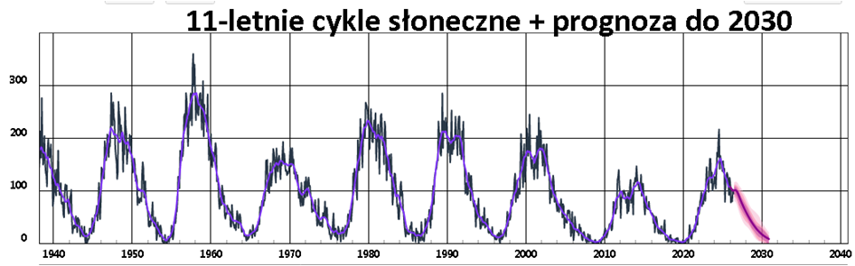
Cykle słoneczne
Właśnie wychodzimy z tej lepszej połówki cyklu i przez 5 kolejnych lat będziemy zbliżać się do apogeum okresu gorszego. Szczególnie społeczeństwa z dużym udziałem ludzi starszych będą w opresji. Starszych ludzi w złej formie łatwo się straszy i wprowadza w różne psychozy. Można im np. sprzedawać na poczcie nic nie warte "plecaki ucieczkowe za 300 zł", co opisałem niedawno na moim FB, ale to jest drobiazg, przy tym czego możemy się spodziewać. Nie znam szczegółowo planów naszych ciemiężycieli, ale możemy się spodziewać, że skorzystają z nadchodzącej okazji, analogicznie jak w roku 2020, choć wtedy sytuacja była zaskakująco komicznie-dramatyczna. Z powodu skrajnie lekkiej zimy 2019/20 chorych i zgonów wiosną 2020 (szczyt covid!) było znacznie miej niż w latach poprzednich, co raportowały zakłady pogrzebowe, nie ukrywając swych problemów finansowych. Gdyby nie "dodatki /tarcze covidowe" branża funeralna byłaby w poważnych tarapatach, mogliby zacząć grzebać żywcem, co w USA jest od kilu dekad w mediach promowane.
Jeśli uważacie, że możecie mnie wesprzeć nie ma kwot za małych. Nawet najmniejsze kwoty dają realne wsparcie.
mBank : 87 1140 2017 0000 4002 1094 2334
Paweł Klimczewski, tytułem: wpłata
2026-07-26
Strona mojego bloga powstaje z niebytu, a grabie mają stać w szopce.
Serwer wykupiłem w Arktyce, za granicą UE! Czytając mojego bloga podgrzewacie coraz chłodniejszą Ziemię i troszkę topicie zimowe lody, które od ponad 10 lat skuwają coraz bardziej Ziemię.
Wiem, że wielu z Was czekało na stronę, nie wszyscy chcą korzystać z FB i podobnych wynalazków, co bardzo popieram. Strona stała się na wiele miesięcy moim jedynym medium, gdy w 2020 roku publikowałem oficjalne dane mówiące o tym, że tamten sezon grypowy nie różnił się specjalnie od lat poprzednich poza tym, że w sezonie 2019 -2020 w Polsce i w wielu krajach europejskich było znacznie mniej zgonów niż zwykle z powodu wyjątkowo lekkiej zimy.
Możecie przeczytać o tym w raporcie "Prawdziwa tragedia narodu polskiego 2020/2021: Walka z covid-19"
Pobierz PDF
Moje dane pochodziły od Ministra Zdrowia oraz z Urzędu Stanu Cywilnego były i są nadal niepodważane przez nikogo. 35 lat z powodzeniem zajmuję się zawodowo badaniami społecznymi i demografią i wiem, o czym mówię.
 Leon Wyczółkowski – Stańczyk (1898)
Leon Wyczółkowski – Stańczyk (1898)
Wywołało to szał mainstreamu i blokadę nie tylko moich profili na social mediach, ale i prywatnego newslettera na polskim, prywatnym hostingu w mojej domenie. W 2026 mam déjà vu. Po kilku latach płacenia ze serwer, ta sama firma hostująca nie potrafi mi przywrócić mojej zdemolowanej strony przez podobno automatyczną aktualizację na serwerze Word Pressa...
 "Trwałość pamięci" Salvador Dalí 1931
"Trwałość pamięci" Salvador Dalí 1931
To był wyraźny znak, że trzeba pozbyć się wszelkich zależności od wielkich i małych firm hi-tech, jeśli chcemy unikać niespodzianek. Wiele lat temu odrzuciłem wszystkie nowe wersje Windowsów, aby panować nad tym, co się dzieje na moim komputerze.
To jest mój chleb, nikt nie ma prawa zmieniać na moim biurku moich narzędzi. Jeśli kupuję grabie i chowam je swojej szopce, to one mają tam stać. Nie chcę każdego ranka szukać grabi po całym obejściu, bo ich producent stworzył grabie inteligentne i zoptymalizował je do poprawnego przechowywania. Teraz grabie co noc same przechodzą do innego, cieplejszego pomieszczenia... Kto chce takie grabie?
 Sianokosy" Randolf Wehn 1911
Sianokosy" Randolf Wehn 1911
Brzmi to absurdalnie, ale od dwóch dekad tak waśnie żyjemy, systemy operacyjne na komputery i telefony nieustannie same się zmieniają i trenują swych użytkowników jak młodych żołnierzy kapral na poligonie: "młody, orientuj się!" i pyk pod nogi granat hukowy.
Co zatem robić, bo widać wyraźnie, że pętla się zaciska. Można oczywiście brać, co dają i czekać aż wszystko na ekranie się zrobi białe lub czarne. Są jednak inne możliwości.
W przypadku utrzymania stron www i innych usług typy e-commerce koniecznie wychodzimy z UE. Jest sporo cywilizowanych państw, w tym w strukturze Wspólnot Europejskich, które mają w nosie unijne idiotyczne normy UE i zakazy, a co ciekawe kładą nacisk na prywatność i wolność słowa! UE to skansen, świat się rozwija, gdy UE pędzi ku przepaści.
Poza bezpieczeństwem naszych zasobów i swobodą wypowiedzi jest druga kwestia, sprawa dość ważna. Polskie firmy np. hostingowe, ale i inne technologiczne np.: telefoniczne, internetowe, itp. to jest szczyt arogancji. Gdy coś trzeba zmienić, naprawić to Waszym jednym zgłoszeniem zajmuje się klika osób i oni wszyscy robią głupstwa nie wiedząc o tym, co robią pozostali. Wy jesteście wtedy komandosem logistyki i musicie rozwiązać węzeł gordyjski, który Wasz "usługodawca" stworzył po Waszym zgłoszeniu. Po takiej akcji już macie dość zgłaszania czegokolwiek, czyli cel został osiągnięty: klient już nic nie zgłosi!
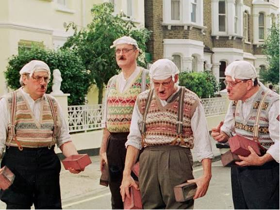
Dział sprzedaży i reklamacji telcomu
Można by tak długo, ale powiem krótko, tym firmom jak kolega, też socjolog: Wszyscy won! Na całym świecie czeka na Was tysiące firm, gdzie na Waszego e-maila, dostaniecie e-maila pisanego przez człowieka, często z uroczymi błędami, nie musicie prowadzić korespondencji w "panelu klienta, który zniknie wraz z Waszą ostatnią płatnością i zostaniecie bez dostępu do dokumentacji, itd. itp.
Można by pisać długo o absurdach w jakich nam przyszło żyć, ale zmierzajmy ku normalności.
Mam jeszcze do wrzucenia na tę stronę blisko 1000 merytorycznych raportów, a czasem lżejszych felietonów pisanych przez ostatnie kilka lat. Dzięki Waszej pomocy ten blog i moja praca analityczna i demaskatorska może się rozwijać za co wam dziękuję i proszę o jeszcze. Samo utrzymanie strony nie jest zbyt drogie. Moim kosztem jest czas, który poświęcając na analizy i pisanie zabieram z innych moich aktywności, głównie zawodowych.
Przed laty zamknięto mi prywatny newsletter, myślę że warto do niego wrócić. Może wzbogacony o prognozy meteo albo jeszcze coś innego, np. "Kitomierz"? Tak roboczo nazwałem własny system do mierzenia ile "kitu" jest w poszczególnych newsach mainstreamu i jakie serwisy danego dnia lub na zawsze omijać. Proszę piszcie sami, na razie na FB co by Was interesowało. Potem oczywiście tu Bedzie forum do dyskusji.
Paweł Klimczewski
Dziękuję wszystkim za dotychczasowe wsparcie. Dzięki niemu wiem, że moja działalność ma sens i ją oraz stronę bloga podtrzymuję. Mam nadzieję, że migracja mojego serwera z PRLbis do wolnego świata będzie początkiem podobnych akcji po Waszej stronie, a mi pozwoli już bez obaw na rozwój serwisu.
Telefon z internetem to otwarta brama wielkiego brata w nasze życie. Zabiera mnóstwo czasu i tłoczy w nas fałszywe myśli. Brak takiego telefonu to moja twierdza, dzięki temu mam czas robić, co robię i pisać dla Was. Stety/niestety nie mam takiego urządzania i nie mogę założyć żadnego kanału płatności typu kawa czy blik. Dlatego tych, którzy mają taką wolę proszę o minimalny wysiłek i tradycyjny przelew.
Jeśli uważacie, że możecie mnie wesprzeć nie ma kwot za małych. Nawet najmniejsze kwoty dają realne wsparcie.
mBank : 87 1140 2017 0000 4002 1094 2334
Paweł Klimczewski, tytułem: wpłata
Jeszcze chwila zanim odtworzę całego bloga z polem do dyskusji i archiwum. Tymczasem zapraszam na moje social media, gdzie możecie pisać, co o tym myślicie i jakich treści i serwisów brakuje Wam na tym padole.
Mój profil na FB
Mój kanał na YT
Moj profil na X. Mocno blokowany...